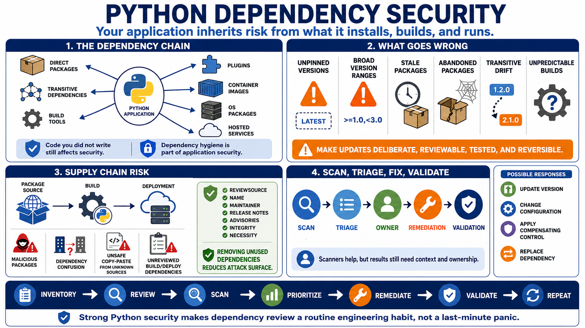

Dependency and Supply Chain Mistakes
Connecting to LMS... Progress: in progress

Narration
Python applications inherit risk from code they did not write. Direct dependencies, transitive dependencies, build tools, plugins, container images, operating system packages, and hosted services all become part of the application's security story. A package may be popular and still have vulnerabilities. A package may be small and still have powerful access during installation, build, or runtime. Dependency hygiene is not optional maintenance; it is part of application security.
Loose dependency management can make builds unpredictable. Unpinned or overly broad version ranges may pull in unexpected changes. Stale packages may contain known weaknesses. Abandoned packages may stop receiving fixes. Transitive dependencies may change beneath a top-level package. The goal is not to freeze software forever, but to make updates deliberate, reviewable, tested, and reversible when necessary.
Supply chain risk also includes malicious package risk, dependency confusion concepts at a high level, unsafe copy-paste from unknown sources, and build or deployment dependencies that are trusted without enough review. Secure teams pay attention to package sources, names, maintainers, update patterns, release notes, integrity mechanisms, vulnerability advisories, and whether a dependency is still needed. Removing unnecessary dependency surface can be as valuable as patching it.
Scanning tools help, but they are not the whole process. A vulnerability scan result still needs triage, ownership, impact analysis, remediation, and validation. Some issues require version updates. Others require configuration changes, compensating controls, or replacing a dependency. Python security improves when dependency review is part of routine engineering, not a panic activity right before release.